中国历朝版图——看后颠覆你的大脑
云飞扬aa11 2018-10-06 20:16:43
秦朝初期全图
秦是中国历史上一个极为重要的朝代，它成为中国历史上第一个统一的中央集权制国家，并且秦北伐匈奴南平百越，第一次明确的划定了中国的版图。在北方则是立国不久的匈奴以及东胡和月氏，而西域诸国尚未与秦接触。
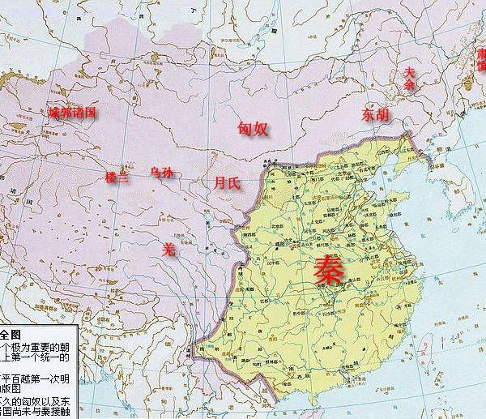
西汉时期全图
西汉是一个锐意进取开疆扩土的王朝。尤其是设置了西域都户，将西域纳入了中国版图，其意义尤为重大。同时西汉势力进入朝鲜半岛，将其半数领土划归中国。在北方，强大的匈奴汗国与西汉战争不息，最终被西汉所击败。对西域主要国家，则在其活动的大致方位上标出国名并未划界。
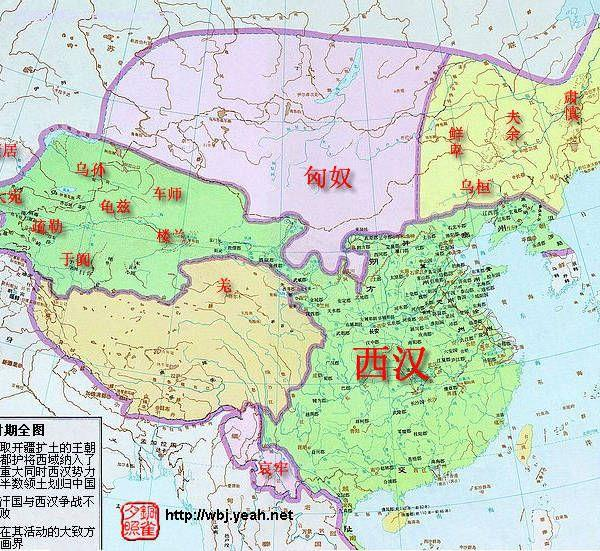
三国时期全图
三国面积加起来基本上就是东汉的面积。曹魏继承了东汉在西域的统治，设置了西域长史府。朝鲜半岛的一半曹魏，越南大部归属东吴，缅甸等过一部分归属蜀汉。在北方，鲜卑崛起对后来的中国产生了重大的影响。
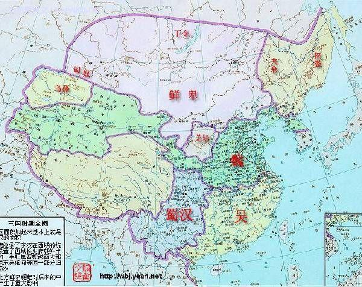
西晋时期全图
西晋结束了三国鼎立的局面重新统一了中国，但其统一时间仅仅五十一年。西晋的版图实际上就是三国合一的面积，既没有开疆扩土也没有版图收缩，不过西晋腐朽的制度导致了八王之乱，加之对鲜卑等游牧民族没有加以防范，使之深入其境内，更是加速了西晋的灭亡。
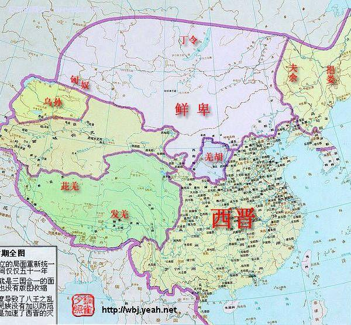
东晋十六国时期全图
此期间汉族的东晋政权全线南缩，而在黄河流域各少数民族政权互相混战，使北方长期陷入分裂状态。前秦一度统一北方，与东晋形成南北对峙之势，后因淝水之战中败于东晋，统治瓦解使北方再度分裂。而西域和青藏高原及匈奴故地，此时并无强大政权。
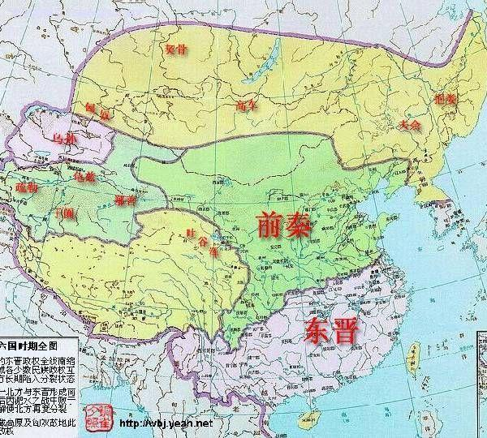
南北朝时期全图
此图是南北朝北朝末期的形势图，此间东魏和西魏分别被北齐和北周所取代，而取代南梁的南陈则是南朝中面积最小的一个王朝。此时在北方，突厥灭掉了柔然，降服高昌龟兹等部，建立起强大的突厥汗国，对中原王朝构成了严重的威胁。
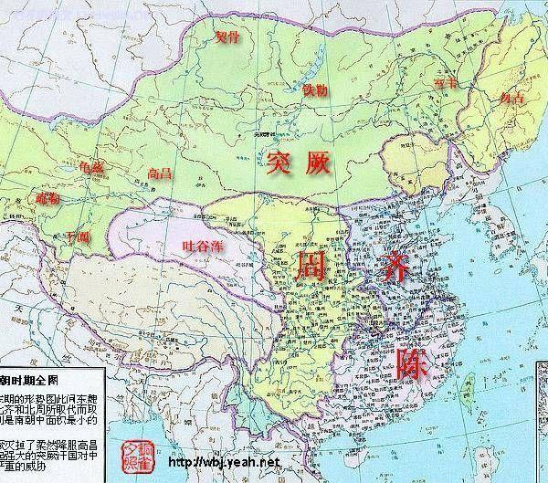
隋时期全图
隋结束了南北朝的分裂，重新统一了中国。不过，没有使西域各部重归天朝。在北方，强大的突厥却分裂成东西两部。东突厥与隋时有战争，最终被隋所击败。在东北和西南，虽然有一些松散的游牧民族部落如室韦契丹等，但对中原构不成威胁。
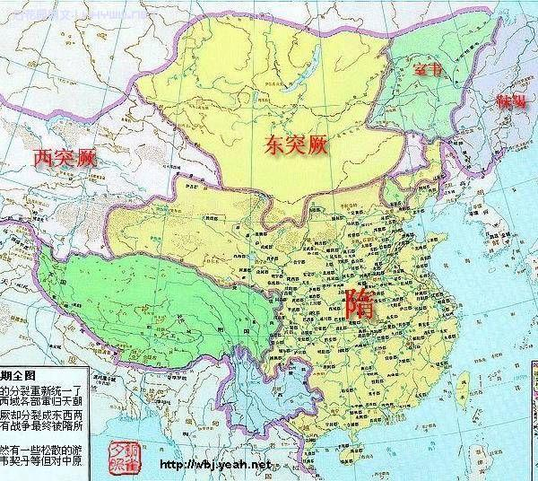
唐时期全图
唐时期疆域共有三次显著的变化，此图是唐前期的形势图。从地图上也可以看出，当时唐朝的强大，尤其是其西部和北部，疆域的开阔已经超越了以往的任何一个朝代。在青藏高原，吐鲁番王朝崛起，而东北尚无强大政权，不久之后便纳入大唐版图。
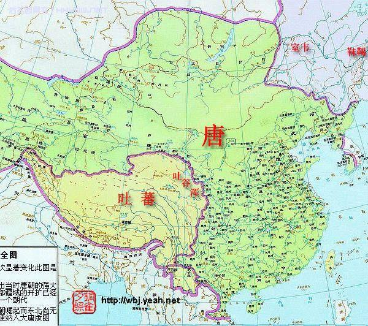
宋辽时期全图
北宋结束了五代十国的分裂局面，却没能收复幽云十六州，与辽形成南北对持局面，此外还有西夏和大理政权与之并存。在中国的主要王朝中，宋的面积是最小的一个，不仅比唐大为收缩，而且还不及辽的面积，在疆域开扩中毫无作为。
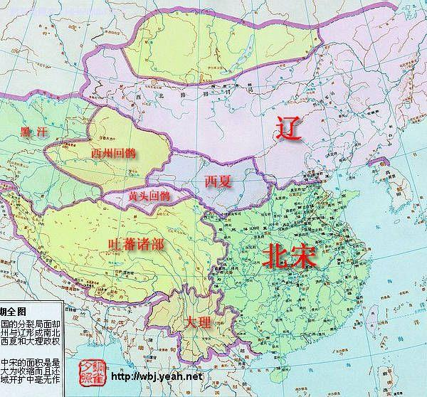
宋金时期全图
此图是南宋与金对峙的形势图。此间，南宋的汉族政权退守江南经营半壁河山，而金政权也无力南进。而契丹族后建立的西辽，及党项族的西夏政权和吐蕃诸部相对平和。不过此时蒙古已经崛起，不久以后将扫平诸强，建立规模空前的蒙古帝国。
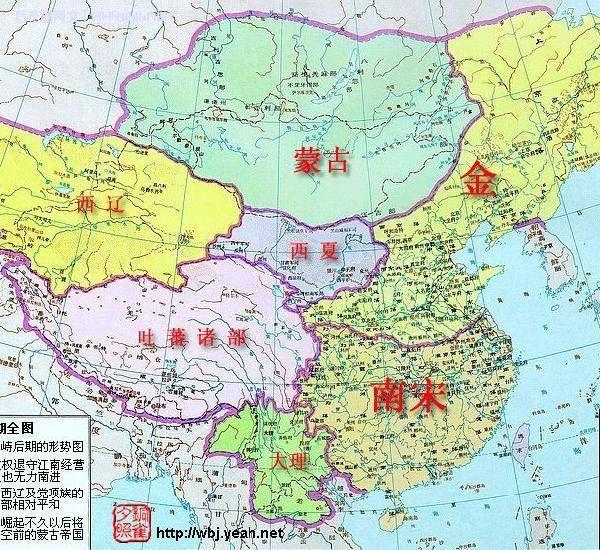
元时期全图
元时期是中国历史上版图最为开阔的时期，此图是元朝前朝形势图。除元朝本土以外还有四大汗国，即：钦察汗国、窝阔台汗国、察合台汗国、伊利汗国。四大汗国名义上听命于元朝皇帝，实际上各自为政。
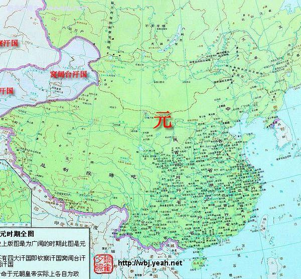
明时期全图
这是明前期的形势图，与元朝相比的疆域大为收缩，不过明继承了元在东北和青藏高原的版图。元朝残余势力退居蒙古草原，分裂为瓦刺和鞑靼(dádá)两部，对明朝形成了巨大的威胁。
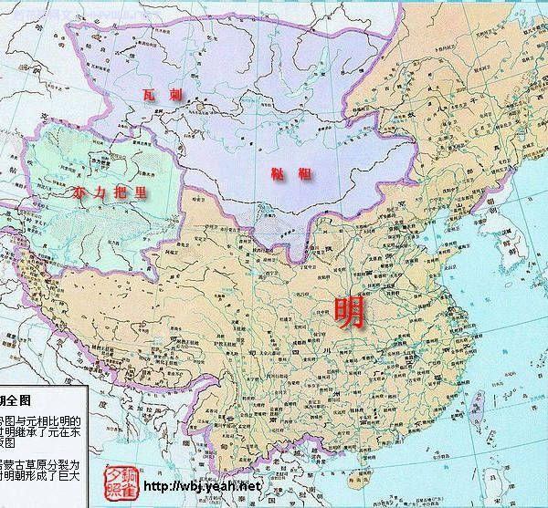
清时期全图
此图为清末期版图，和清前期相比，疆域大为收缩。东北库页岛外兴安岭等地及新疆伊犁已西，尽归俄罗斯所有。帕尔米高原成为中俄待议地区，而东海沿海的台湾地区，此时已归属日本。此图奠定了今日中国的疆域。
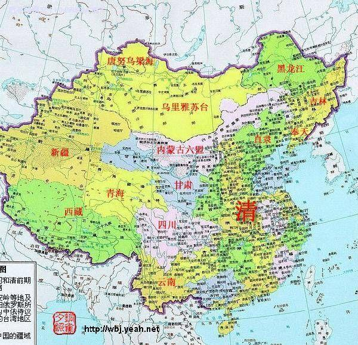
中华人民共和国
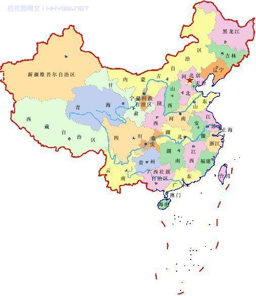